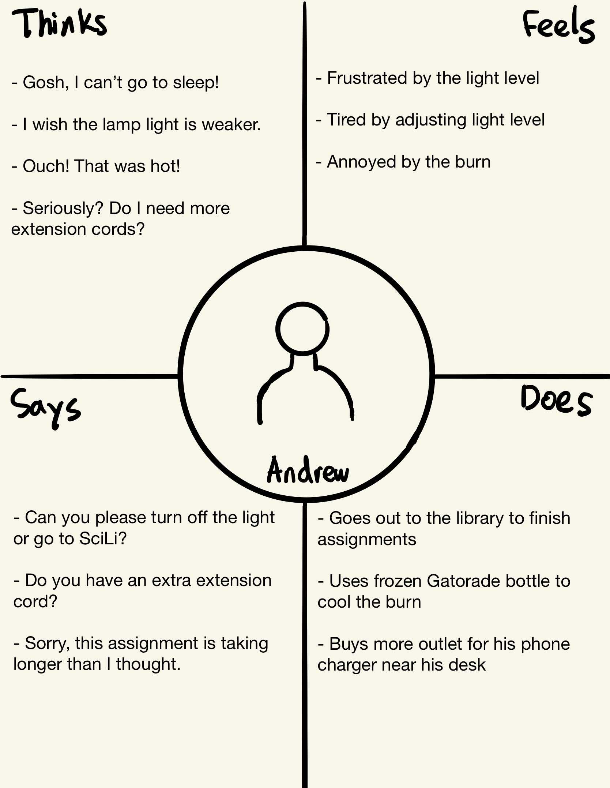
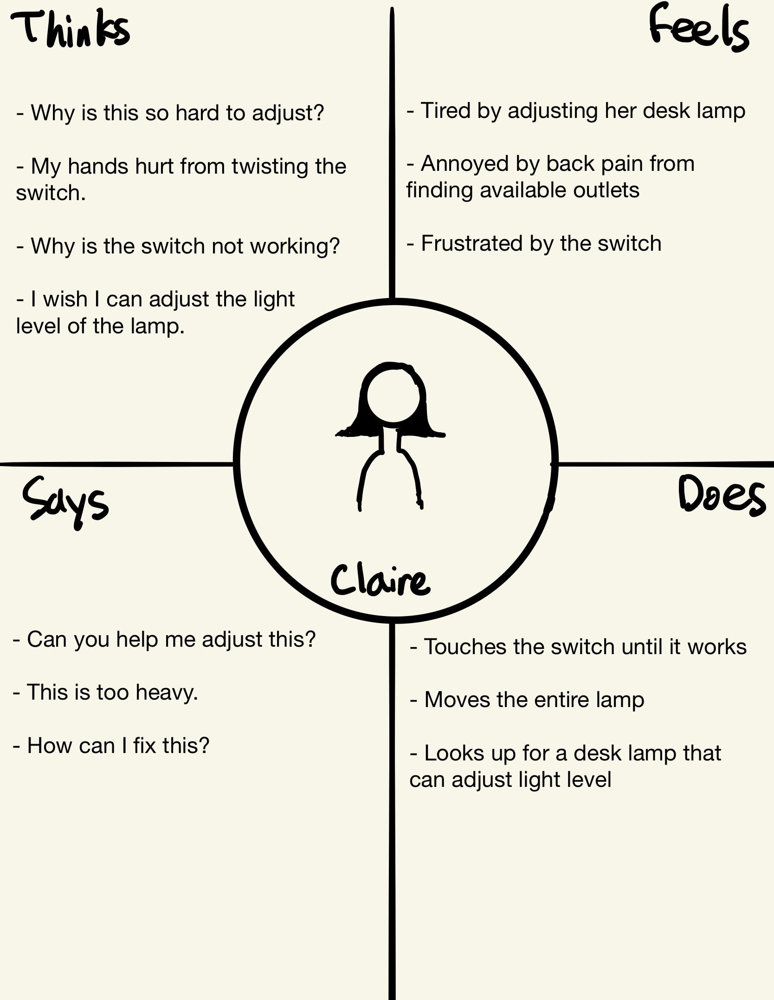

Part 2:
Key observations:
- Some twisted the switch twice to turn on the lamp.
- Some moved the entire lamp instead of using the swing arm to adjust direction.
- Some turned off the room light after turning on the desk lamp
Responses:
Do you prefer desk lamps that can adjust level of light or just on and off functionalities?
Julie: Prefers adjustable lamp.
Jacob: Prefers adjustable lamp but would use it similarly to one with just on/off functionalities.
Robert: Prefers adjustable lamp.
Summary: Most people prefer lamps that can adjust light level.
Is there anything uncomfortable when adjusting the direction of the light?
Julie: When the swing arm is too stiff.
Jacob: When the swing arm is too stiff.
Robert: When the swing arm is too stiff.
Summary: Many people just move the entire lamp because the swing arm is too stiff
Which type of desk lamp switch do you prefer the most (click, string, twist, etc.)?
Julie: Prefers touch the most but thinks sensitivity is important. Touch is most comfortable. Touch but easy to adjust.
Jacob: Prefers touch the most.
Robert: Prefers twist if it can adjust level, click if it is just on and off.
Summary: Most prefer touch because it is easiest to press and some prefer twist because you can better adjust the light level.
Do you prefer using desk lamps with a USB port or an outlet?
Julie: Yes because it is easy to charge devices; outlets are located at places hard to see (ex. Under the desk, behind furniture, etc.).
Jacob: No, because it is bad for people who get easily distracted.
Robert: No, because energy use would be too heavy.
Summary: People who use a lot of devices responded yes while people who gets easily distracted or encourages energy conservation responded no.
Have you got burned from desk lamps before?
Julie: Yes, burned the left hand once.
Jacob: Yes, touched it a few times out of curiosity during childhood.
Robert: Yes, Touched it accidentally during college.
Summary: Most people has small burns for touching the lamp accidently or out of curiosity.
Have you ever had trouble sleeping because of desk lamps?
Julie: No.
Jacob: Yes, at hotels.
Robert: Yes, during college.
Summary: Most people with boarding experiences responded yes.
Part 3:
Persona 1: Andrew
Andrew's Empathy Map:

Andrew is a sophomore at Brown University studying applied math and economics from LA, California. He lives in a dorm room with two roommates and spends most of his time in his room.
Interface Problems:
- During midterm and final seasons, Andrew and his roommates often ask each other to go to the library to study because they can’t go to sleep because of the desk lamp light.
- When he studies in his room, Andrew occasionally gets his hand burned by accidentally touching the lamp that has been on for a long period of time.
- The dorm room does not have enough outlets, so Andrew often finds himself needing more extension cords for charging his devices (computer, phone, games, etc.) because the ones that he already used are for other devices (lamp, fridge, fan, etc.).
This persona represents the user of my choice because it depicts problems that many students face. Students with roommates who study all night often find themselves difficult to sleep and accidentally touch the hot desk lamp. Many dorms don’t have enough outlets, so many students need more extension cords, especially for charging devices.
Persona 2: Claire
Claire's Empathy Map:

Claire is an English professor at University of Chicago from Boston, Massachusetts. She lives near the University with her family and spends most of her time at her office and teaching students.
Interface Problems:
- Claire’s desk lamps all have swing arms for adjusting the direction of the light, but the arms are too stiff and require more strength to adjust them.
- When she tries to move the lamp to adjust the light, it is too heavy to move it.
- Claire’s desk lamps don’t have the functionalities to adjust the level of light; it just has only an on and off switch. Therefore, she often finds trouble adjusting the level of light in her room and office.
- Light switches are also poorly designed. She has to twist the switch to adjust the level of light for one of her lamps, which requires more strength than just clicking the button. For the other one, the switch sensor is so dull that she often finds double-clicking it.
This persona represents the user of my choice because it shows problems that people face while they read or study. When swing arms are very stiff, it requires more strength to adjust the lamp direction. So many people just move the entire lamp instead of adjusting the arm, and it could cause more problems if the lamp is too heavy. Some lamps do not have the functionality to adjust the level of light. This can be problematic if the user is sensitive to the level of light. Finally, many users also have problems with design of the switch and the click sensor quality that often gets them tired or annoyed.